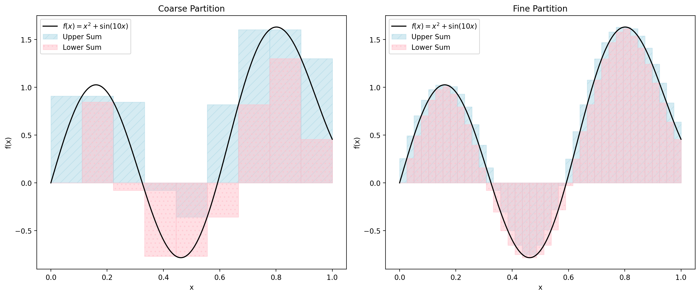
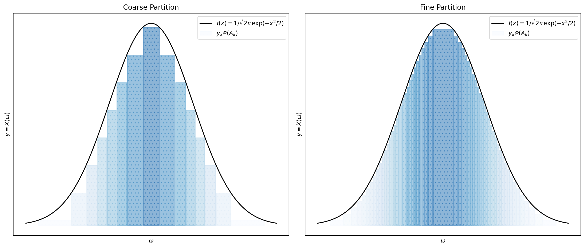

Expectation, Information and Conditioning
A.1 Expectation
Let $X$ be a random variable defined on a probability space $(\Omega, \F, \Prob)$. We would like to compute an “average value” of $X$, taking the probabilities into account when averaging. If $\Omega$ is finite, we simply define this average value by \[ \E[X] = \sum_{\omega \in \Omega} X(\omega)\,\Prob(\{\omega\}). \] If $\Omega$ is countably infinite, its elements can be listed in a sequence $\omega_1, \omega_2, \omega_3, \ldots$, and (provided the series converges absolutely) we can define $\E[X]$ as an infinite sum: \[ \E[X] = \sum_{k=1}^{\infty} X(\omega_k)\,\Prob(\{\omega_k\}). \]
However, if $\Omega$ is uncountably infinite, we cannot list its elements in a sequence, and uncountable sums cannot be defined in this way.
Riemann Integral Revisited
If $f(x)$ is a continuous function defined for all $x$ in the closed interval $[a, b]$, we define the Riemann integral $\int_a^b f(x)\dd x$ as follows. First partition $[a, b]$ into subintervals $[x_0, x_1], [x_1, x_2], \ldots, [x_{n-1}, x_n]$, where $a = x_0 < x_1 < \cdots < x_n = b$. We denote by $\Pi = \{x_0, x_1, \ldots, x_n\}$ the set of partition points and by \[ \|\Pi\| = \max_{1 \leq k \leq n} (x_k - x_{k-1}) \] the mesh (length of the longest subinterval) of the partition. For each subinterval $[x_{k-1}, x_k]$, we set $M_k = \max_{x_{k-1} \leq x \leq x_k} f(x)$ and $m_k = \min_{x_{k-1} \leq x \leq x_k} f(x)$. The upper Riemann sum is \[ \operatorname{Riemann\ Sum}_{\Pi}^{+}(f) = \sum_{k=1}^n M_k (x_k - x_{k-1}), \] and the lower Riemann sum is \[ \operatorname{Riemann\ Sum}_{\Pi}^{-}(f) = \sum_{k=1}^n m_k (x_k - x_{k-1}). \]
As $\|\Pi\|$ converges to zero, the upper Riemann sum and the lower Riemann sum converge to the same limit, which we denote by $\int_a^b f(x)\dd x$. This common limit is the Riemann integral.

Lebesgue Integral
Recall that a random variable is a measurable function $X : \Omega \to \R$, where $\Omega$ is the sample space. The difficulty with imitating the Riemann procedure to define expectation is that $X$, unlike the function $f$ above, is defined on an abstract space $\Omega$ that is often not a subset of $\R$. In Figure A.2, the “$x$-axis” is not the real line but an abstract space $\Omega$, so there is no natural way to partition $\Omega$ as we partitioned $[a, b]$ in Figure A.1. Therefore, we partition the $y$-axis instead.
Assume for the moment that $0 \leq X(\omega) < \infty$ for every $\omega \in \Omega$, and let $\Pi = \{y_0, y_1, y_2, \ldots\}$ be a partition of $[0, \infty)$ such that $0 = y_0 < y_1 < y_2 < \cdots$ with $\lim_{k \to \infty} y_k = \infty$. For each subinterval $[y_k, y_{k+1})$ ($k = 0, 1, 2, \ldots$), we set \[ A_k = \{\omega \in \Omega : y_k \leq X(\omega) < y_{k+1}\}. \]
In the Riemann integral, the measure of a subinterval along the $x$-axis is its length, and the height along the $y$-axis is the value of the function. Here, the measure of the corresponding event along the horizontal axis is its probability $\Prob(A_k)$. Therefore, we define the lower Lebesgue sum to be
\[
\operatorname{Lebesgue\ Sum}_{\Pi}^{-}(X) = \sum_{k=0}^{\infty} y_k\,\Prob(A_k).
\]

As $\|\Pi\| = \sup_{k \geq 0} (y_{k+1} - y_k)$ approaches zero (with $y_k \to \infty$), this lower sum converges to a limit in $[0, \infty]$, which we define to be the Lebesgue integral $\int_{\Omega} X(\omega)\dd\Prob(\omega)$, or simply $\int_{\Omega} X\dd\Prob$. The Lebesgue integral may equal $+\infty$, because we have not placed any bound on how large the values of $X$ can be.
We assumed above that $0 \leq X(\omega) < \infty$ for every $\omega \in \Omega$. If the set of $\omega$ violating this condition has probability zero, there is no effect on the integral. If $\Prob\{\omega : X(\omega) \geq 0\} = 1$ and $\Prob\{\omega : X(\omega) = \infty\} > 0$, then we define $\int_{\Omega} X(\omega)\dd\Prob(\omega) = +\infty$.
Finally, we consider random variables $X$ that can take both positive and negative values. For such a random variable, we define the positive and negative parts of $X$ by \[ X^{+}(\omega) = \max\{X(\omega), 0\}, \qquad X^{-}(\omega) = \max\{-X(\omega), 0\}. \] Both $X^{+}$ and $X^{-}$ are nonnegative random variables satisfying $X = X^{+} - X^{-}$ and $|X| = X^{+} + X^{-}$. Both $\int_{\Omega} X^{+}(\omega)\dd\Prob(\omega)$ and $\int_{\Omega} X^{-}(\omega)\dd\Prob(\omega)$ are defined by the procedure above, and provided they are not both $\infty$, we define \[ \int_{\Omega} X(\omega)\dd\Prob(\omega) = \int_{\Omega} X^{+}(\omega)\dd\Prob(\omega) - \int_{\Omega} X^{-}(\omega)\dd\Prob(\omega). \]
If $\int_{\Omega} X^{+}(\omega)\dd\Prob(\omega)$ and $\int_{\Omega} X^{-}(\omega)\dd\Prob(\omega)$ are both finite, we say that $X$ is integrable, and $\int_{\Omega} X(\omega)\dd\Prob(\omega)$ is finite. If $\int_{\Omega} X^{+}(\omega)\dd\Prob(\omega) = \infty$ and $\int_{\Omega} X^{-}(\omega)\dd\Prob(\omega) < \infty$, then $\int_{\Omega} X(\omega)\dd\Prob(\omega) = +\infty$; symmetrically, if $\int_{\Omega} X^{+}(\omega)\dd\Prob(\omega) < \infty$ and $\int_{\Omega} X^{-}(\omega)\dd\Prob(\omega) = \infty$, then $\int_{\Omega} X(\omega)\dd\Prob(\omega) = -\infty$. However, if both $\int_{\Omega} X^{+}(\omega)\dd\Prob(\omega) = \infty$ and $\int_{\Omega} X^{-}(\omega)\dd\Prob(\omega) = \infty$, then $\int_{\Omega} X(\omega)\dd\Prob(\omega)$ is undefined.
Let $X, Y$ be random variables on a probability space $(\Omega, \F, \Prob)$. The Lebesgue integral $\int_{\Omega} X(\omega)\dd\Prob(\omega)$ is defined if and only if at least one of $\int_{\Omega} X^{+}(\omega)\dd\Prob(\omega)$ or $\int_{\Omega} X^{-}(\omega)\dd\Prob(\omega)$ is finite; moreover, $X$ is integrable if and only if both are finite. The following properties hold:
- If $X$ takes only finitely many values $y_0, y_1, \ldots, y_n$, then \[ \int_{\Omega} X(\omega)\dd\Prob(\omega) = \sum_{k=0}^n y_k\,\Prob\{X = y_k\}. \]
- (Integrability) The random variable $X$ is integrable if and only if \[ \int_{\Omega} |X(\omega)|\dd\Prob(\omega) < \infty. \]
- (Comparison) If $X \leq Y$ almost surely (i.e., $\Prob\{X \leq Y\} = 1$), and if $\int_{\Omega} X(\omega)\dd\Prob(\omega)$ and $\int_{\Omega} Y(\omega)\dd\Prob(\omega)$ are defined, then \[ \int_{\Omega} X(\omega)\dd\Prob(\omega) \leq \int_{\Omega} Y(\omega)\dd\Prob(\omega). \] In particular, if $X = Y$ almost surely and one of the integrals is defined, then both are defined and \[ \int_{\Omega} X(\omega)\dd\Prob(\omega) = \int_{\Omega} Y(\omega)\dd\Prob(\omega). \]
- (Linearity) If $\alpha, \beta \in \R$ and $X, Y$ are integrable, or if $\alpha, \beta \geq 0$ and $X, Y \geq 0$ almost surely, then \[ \int_{\Omega} \bigl(\alpha X(\omega) + \beta Y(\omega)\bigr)\dd\Prob(\omega) = \alpha \int_{\Omega} X(\omega)\dd\Prob(\omega) + \beta \int_{\Omega} Y(\omega)\dd\Prob(\omega). \]
Let $X$ be a random variable on a probability space $(\Omega, \F, \Prob)$. The expectation (or expected value) of $X$ is defined to be \[ \E[X] = \int_{\Omega} X(\omega)\dd\Prob(\omega). \] This definition is well-defined whenever $X$ is integrable, i.e., \[ \E[|X|] = \int_{\Omega} |X(\omega)|\dd\Prob(\omega) < \infty, \] or whenever $X \geq 0$ almost surely (in which case $\E[X]$ may be $+\infty$).
A.2 Convergence of Integrals
Let $X_1, X_2, \ldots$ be a sequence of nonnegative random variables on a probability space $(\Omega, \F, \Prob)$ such that $0 \leq X_1(\omega) \leq X_2(\omega) \leq \cdots$ for every $\omega \in \Omega$, and let $X(\omega) = \lim_{n \to \infty} X_n(\omega)$ for every $\omega \in \Omega$. Then \[ \lim_{n \to \infty} \int_{\Omega} X_n(\omega)\dd\Prob(\omega) = \int_{\Omega} X(\omega)\dd\Prob(\omega), \] that is, \[ \lim_{n \to \infty} \E[X_n] = \E[X]. \]
Another fundamental convergence result is the Dominated Convergence Theorem.
Let $X_1, X_2, \ldots$ be a sequence of random variables on a probability space $(\Omega, \F, \Prob)$ such that $X_n(\omega) \to X(\omega)$ as $n \to \infty$ for every $\omega \in \Omega$. Suppose there exists an integrable random variable $Y$ such that $|X_n(\omega)| \leq Y(\omega)$ for every $n$ and every $\omega \in \Omega$. Then $X$ is integrable and \[ \lim_{n \to \infty} \E[X_n] = \E[X]. \]
A.3 Information and Conditional Expectation
Let $\Omega$ be a nonempty set, let $T > 0$ be fixed, and assume that for each $t \in [0, T]$ there is a $\sigma$-algebra $\F(t) \subseteq \F$. If $s \leq t$ implies $\F(s) \subseteq \F(t)$, then the collection $\{\F(t)\}_{0 \leq t \leq T}$ is called a filtration.
A filtration represents the information available over time. More precisely, at time $t$, we know for every event $A \in \F(t)$ whether the realized outcome $\omega$ belongs to $A$. In financial modelling, we frequently evaluate the expected value of a future quantity given the information available at an earlier time $s < t$. This leads to conditional expectation.
Let $X$ be an integrable random variable ($\E[|X|] < \infty$) on a probability space $(\Omega, \F, \Prob)$, and let $\mathcal{G} \subseteq \F$ be a sub-$\sigma$-algebra. The conditional expectation of $X$ given $\mathcal{G}$ is an integrable random variable, denoted by $\E[X \mid \mathcal{G}]$, characterized (uniquely up to almost sure equality) by the following two properties:
- $\E[X \mid \mathcal{G}]$ is $\mathcal{G}$-measurable;
- For every $A \in \mathcal{G}$, \[ \int_{A} \E[X \mid \mathcal{G}]\dd\Prob = \int_{A} X\dd\Prob. \]
If $\mathcal{G}$ is the $\sigma$-algebra generated by another random variable $Y$ (i.e., $\mathcal{G} = \sigma(Y)$), we typically write $\E[X \mid Y]$ instead of $\E[X \mid \sigma(Y)]$.
There are three key properties of conditional expectation:
Let $(\Omega, \F, \Prob)$ be a probability space and $\mathcal{G} \subseteq \F$ a sub-$\sigma$-algebra.
- (Taking out what is known) If $Y$ and $XY$ are integrable random variables and $X$ is $\mathcal{G}$-measurable, then \[ \E[XY \mid \mathcal{G}] = X\,\E[Y \mid \mathcal{G}] \qquad \text{a.s.} \]
- (Tower Property / Law of Iterated Expectations) If $\mathcal{H}$ is a sub-$\sigma$-algebra of $\mathcal{G}$ (so $\mathcal{H}$ contains less information than $\mathcal{G}$) and $X$ is an integrable random variable, then \[ \E\bigl[\E[X \mid \mathcal{G}] \mid \mathcal{H}\bigr] = \E[X \mid \mathcal{H}] \qquad \text{a.s.} \]
- (Independence) If $X$ is integrable and independent of $\mathcal{G}$, then \[ \E[X \mid \mathcal{G}] = \E[X] \qquad \text{a.s.} \]
Let $(\Omega, \F, \Prob)$ be a probability space, let $T > 0$ be fixed, and let $\{\F(t)\}_{0 \leq t \leq T}$ be a filtration of sub-$\sigma$-algebras of $\F$. Consider an adapted stochastic process $\{X(t)\}_{0 \leq t \leq T}$. Suppose that for all $0 \leq s \leq t \leq T$ and every nonnegative Borel-measurable function $f$, there exists a Borel-measurable function $g$ such that \[ \E[f(X(t)) \mid \F(s)] = g(X(s)) \qquad \text{a.s.} \] Then $X$ is called a Markov process.
The Markov property is a strong form of conditional independence: given the present state of the process, its future evolution is independent of its past history.